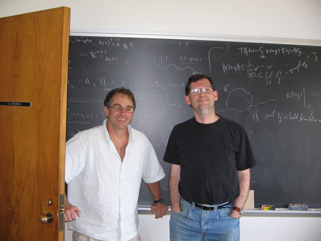

Conferences
organized

Allan Greenleaf 60th birthday conference, with Felea, Pramanik and
Seeger, August 2022.
CIRM (Luminy) workshop on geometric measure theory, with Magyar and
Ziegler, Spring 2020.
Tribute to Bourgain at the Combinatorics and Number Theory
Conference at CUNY, May 2019.
Northeast Analysis Network Excelsior Lectures, with L. Lanzani,
September 2017 at Syracuse.
Northeast Analysis Network Excelsior Lectures, with L. Lanzani,
September 2016 at Rochester.
CUNY Conference on Harmonic Analysis and Frame Theory, with A.
Mayeli and G. Olafsson, June 2015.
AMS Special Session in memory of Daryl Geller, with A. Mayeli,
(2012). Conference proceedings volume was published.
Fields Institute program on analysis, partial differential
equations and combinatorics, with I. Laba, M. Lacey and E. Sawyer,
2008.
Special Session on Harmonic Analysis (with Michael Lacey) at the
regional AMS conference in Salt Lake City, Utah, October 3-5,
2006.
NSF Focused Research Group Conference at the University of
Missouri-Columbia, March 2006, with S. Hofmann, D. Mitrea and M.
Mitrea.
Combinatorial and additive number theory (CANT 2005). A conference
in celebration of Mel Nathanson�s 60th birthday. (Member of the
organizing committee).
CMS conference at Simon Fraser University in Vancouver (with I.
Laba), December 6-8, 2003.
ESI (Schrodinger Insitute in Vienna) Workshop on mathematics
related to the Kakeya Needle Problem, (with I. Laba and D.
Muller), Vienna, Austria,
Fall 2003.
A conference on Harmonic Analysis and Partial Differential
Equations at the University of Missouri, May 8-11, 2002, (with L.
Grafakos, S. Hofmann, and I. Verbitsky).
Workshop on convexity and Fourier analysis, (with L. Brandolini,
L. Colzani, and G. Travaglini), Milan, Italy, June 2001.